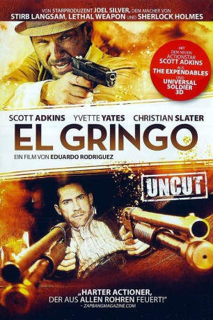

#7120 El Gringo
 
 IMDB-Wertung: 5.5 / 10
IMDB-Wertung: 5.5 / 10  Metascore: 0
Metascore: 0 
Ein ruhiger Mann mit einer rauen und blutigen Vergangenheit, überquert die Grenze nach Mexiko mit zwei Millionen US-Dollar im Gepäck und kommt nach El Fronteras. Doch er hat nicht erwartet, dass die Menschen in dem kleinen Dorf es faustdick hinter den Ohren und ausnahmslos alle es auf sein Geld abgesehen haben. Auch der zwielichtige US-Lieutenant West jagt den Mann und schreckt auch nicht davor zurück, ihn notfalls umzubringen, um das Geld zu bekommen. In der ortsansässigen Bar lernt der Mann die wunderschöne Anna kennen und die beiden verlieben sich, doch ob er der Frau wirklich vertrauen kann oder ob sie auch nur auf sein Geld aus ist, bleibt ungewiss. Als der mexikanische Polizeichef Espinoza, der gleichzeitig auch die Mafia in dem Dorf kontrolliert, von den zwei Millionen US-Dollar erfährt, setzt er den Besitzer auf die offizielle Abschussliste. Nun geht der Kampf um das Geld erst richtig los...
Jahr: 2012
Dauer: 98 Minuten
FSK: 18
Land: USA Studio: After Dark FilmsTonspuren:
Untertitel: Deutsch,
Auflösung: 1080p (1920x816) Größe: 5580 MB
Genre: Action, Drama
Regisseur: Eduardo Rodriguez
Drehbuch: Jonathan W. Stokes
Soundtrack:
Darsteller:
 Scott Adkins als The Man
Scott Adkins als The Man Zachary Baharov als Officer Bell
Zachary Baharov als Officer Bell Valentin Ganev als Deputy Chief Logan
Valentin Ganev als Deputy Chief Logan Bashar Rahal als Officer Sullivan
Bashar Rahal als Officer Sullivan- Sofía Sisniega als Flaca
 Christian Slater als Lt. West
Christian Slater als Lt. West- Yvette Yates als Anna
- Petar Bachvarov als Tortuga
- Mimoza Bazova als Female Bus Station Attendant
- Michail Elenov als Pablo
- Erando González als Chief Espinoza
- Israel Islas als Culebra
- George Karlukovski als El Jefe
- Vlado Mihailov als Chilango
- Velislav Pavlov als Officer Dunn
- Krasimir Rankov als Restaurante Owner
- Marii Rosen als Naco
- Edward Joe Scargill als Officer Conner
 Atanas Srebrev als Officer Rick
Atanas Srebrev als Officer Rick- Yoanna Temelkova als Shop Keeper
- Bliss Kelley als Drunk Tourist , uncredited
- Blaire Noonan als Springbreak Party Girl , uncredited
Datei: X:\FSK18-2012\El Gringo (2012, FSK18, 1920x816).mkv seit 28.09.2017
Festplatte: FSK18
 Es gibt insgesamt 26 Filme in der Gruppe 'FSK18-2012'
Es gibt insgesamt 26 Filme in der Gruppe 'FSK18-2012'